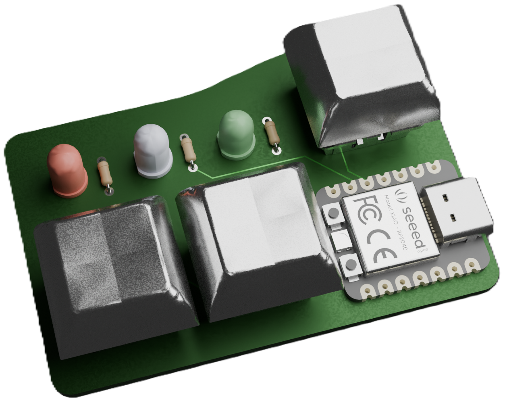
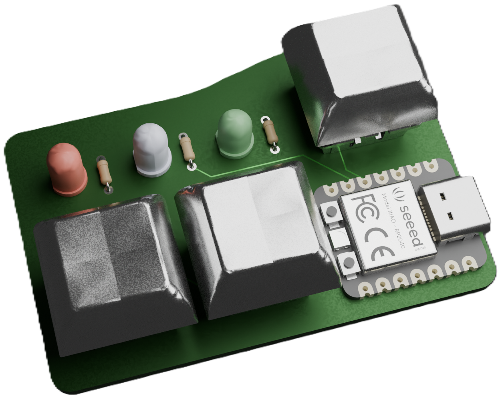

Welcome to Pathfinder
make a custom PCB controller board and efidget
(maybe learn hardware skills along the way)
make a custom PCB controller board and efidget
(maybe learn hardware skills along the way)
Alright, to design your PCB we're going to use a software called KiCAD. Download KiCAD at kicad.org/download. You'll see something like this:


Once you've selected your operating system, click "GitHub" from the list of download options and the download should automatically start. Once the download is complete, click it (in your file explorer) and follow its instructions to install it.
Okay, cool! You've got KiCAD installed. Open it up real quick just to make sure everything's good. It should look like this.

If your screen looks like this, you're all set for the next step!
So, now that we've installed KiCAD, let's start on our PCB. Create a new project by going to "File" in the top navigation bar and clicking "New Project". Go to the projects folder and create a new project. I called mine pathfinder (since it's the original), but you should call yours something different.


Now, open the project's schematic by double-clicking the Schematic Editor.
This is a schematic, which is basically a visual representation of our circuit we're going to put on our PCB. It doesn't matter where you put your components or how it's laid out--a schematic is just for wiring.
We're going to be making my Pathfinder (3 buttons and 3 LEDs), but to make a valid submission, you have to change yours up a bit. Maybe you add another button, a buzzer, or maybe even a KNOB (very cool). If you want any help with these add-ons shoot a message in #electronics or DM me @Meghana!
First, let's add the microcontroller. This is the brains of the operation: it does all the processing, computing, and... controlling. The microcontroller is the funky shaped rectangle you saw on the bottom right of my pathfinder. We're using a XIAO RP2040, which is a small but powerful board. It's pretty simple and easy to use, so it's perfect for us.
A microcontroller is a PCB too! It's got a bunch of components, one of which is a chip (in this case the RP2040 chip), which actually does all the work. Everything else on the microcontroller board is an LED, a button, monitors power, or makes sure the chip doesn't overheat.


You can press "A" on your keyboard and open KiCAD's default symbol library, which has thousands of symbols for parts. But the XIAO RP2040 isn't one of those default symbols, so we have to import it ourselves.
Some wonderful person has created and uploaded a KiCAD symbol for the XIAO RP2040 here. Download the raw file and we're ready to import it.


Go back to the main KiCAD window (it should still be open), and go to "Preferences" in the top navigation bar. Click "Manage Symbol Libraries" and find the file icon at the bottom of the pop-window that appears.
Find the XIAO symbol we just downloaded and click "open". Then, click "OK" in the pop-up window to save.
Make sure you click OK, don't just close the window or else it won't save.
We've got the XIAO's symbol! Go back to your schematic and hit "A" on your keyboard. It'll bring up the symbol libraries and if you now search for "XIAO RP2040 DIP" the symbol we need should appear. Magic, right?
You may be wondering, "what's a symbol?". Well if a schematic is a visual repesentation of our entire circuit then a symbol is the visual representation of a component. I'll have 3 components for this tutorial: the XIAO, the buttons, and the LEDs.
When you place the XIAO, you'll see a bunch of lines sticking out the sides. Those represent "pins", or connection points of that component. (The gold pads you see on the edges of the XIAO are pins)


The next piece of the puzzle we'll add is the buttons. They're easy because their symbol is default. Go to place a symbol (press "A" on your keyboard) and type in "SW PUSH", and it's the first one that shows up.
This symbol is insanely simple. It's 2 pins: voltage in and voltage out. That's because that's all a button needs.
If you were using a arcade button or even one of those tiny buttons that come in arduino kits you'd use the same symbol--electrically, they're all the same.
Next step is the LEDs, which is also a custom symbol.
You can find the symbol here. You'll get a .zip file of the LED's symbol, footprint, and 3D model (we'll get to those last 2 later). Extract the zip file into your project folder (or wherever you want, personal choice).
Follow the same steps as before to import the symbol (Preferences -> Manage Symbol Libraries -> find the file -> OK), and we're good to place 3 LEDs.
Search for "L08R5000Q1" (rolls of the tongue, doesn't it?), and donezo.


One last component to add: a resistor. We don't want to give 5V straight volts to the LED or else it'll short and be ruined forever.
We don't have to do this for the switch, that can operate with 5V.
Search for a resistor in the symbol library and connect 1 resistor to the left end of each of your LEDs. Since I have 3 LEDs, I'm placing 3 resistors. You connect components by pressing "W" and wiring their pins together OR by placing their pins on top of each other (see GIF).
Now comes to the fun part: wiring. You can hit "W" click around for a green wire to show up. You can connect pins using wire, OR you can use the less messy and awesome method of global tags.
If you make a global tag that says "button1" and connect it to your first button, then make a second, identical tag that has the same name and connect it to a pin on your microcontroller, they're connected.
What you just did was exactly the same as connecting those 2 pins with a wire, but less messy. Whenever any global tags have the exact same name (case sensitive) they're connected.
Having these tags takes up a lot less space, and I'm sure you can imagine how much easier this makes your schematic to read.


Place unique labels for each component and connect each one to a different pin on the XIAO's symbol.
Make sure you're only connecting XIAO pins that say GPIO (General Purpose Input/Output), because they're built for inputs (buttons) or outputs (LEDs).
5V is a pin that (you guessed it), outputs 5V, 3V3 outputs 3.3V, and GND is ground, which is how the microcontroller deals with all the electrons after they go through your circuit.
Last step, we have to connect the right side of every component to GND. That's pretty much the basics of electronics: voltage in on the left and out to ground on the right.
You can place GND symbols ("A" on your keyboard) and it acts like a global label. You could actually just make a global label called "ground" (or anything else) and it'd do the same thing.
You also have to connect a GND symbol to the GND pin on the XIAO (remember, they're all connected)


When all's said and done, your schematic should look like this.
Congrats! You've officially made a PCB schematic!

Since the XIAO we're using isn't one of KiCAD's default parts, we have to download the XIAO's footprint and import it. The same wonderful person has uploaded the footprint to GitHub. Follow this link and download the raw file. Find the KiCAD folder on your computer and go to the "footprints" subfolder. Move the file there.
A footprint is what the component will look like on the actual PCB. The way you arranged your schematic has no effect on the actual PCB, but the way you make your PCB in the PCB Editor is exactly how it will show up when it goes to get printed.
Next, we have to import the footprint just like we imported the symbol. Go to the main KiCAD window, click "Preferences" in the top nav bar, then click "Manage Footprint Libraries". A pop up window similar to the symbol libraries will show up, and click the file icon at the bottom to import a custom footprint.
Now, select the FOLDER where the XIAO's footprint is. You should've moved the XIAO's footprint file to the footprint folder that KiCAD has, so select that one. Every footprint in your "Footprints" folder will be included in your footprint libraries.


We also have to add the footprint of the LED (which you already downloaded here) Move the footprint you extracted into KiCAD's "Footprints" folder too.
Your "Footprints" folder should have these 2 files in it.
Next, we gotta assign footprints to our symbols. KiCAD knows what components you're using electrically, but it doesn't know the exact part. The symbol for all buttons is the same, but since a tiny Arduino button is physically different than an arcade-style button, we have to led KiCAD know what's actually goint to show up on our PCB.
This video will go through assigning your footprints.
This video'll teach you all about PCB routing and how you can polish off your PCB
stay till the end for a super sick outro

Download these four 3D models so we can put them in our PCB 3D viewer. I got these from GrabCAD, you can totally find different ones (or even make your own) if you want.
Go to your PCB editor and select a footprint. Hit "E" on your keyboard (or right click and choose "Properties"). Click the "3D Models" tab on the menu that pops up and find the file icon.
Select the CAD model for that component and you should see it show up in the preview. You'll probably have to do some rotating and offsets to make sure everything lines up properly.


For your switches (buttons), you'll add the model of the switch AND the model of the keycap. You can add one at a time (file icon -> select file x2).
When you're done adding the model for all the components, open the 3D Viewer and you'll see a shiny new PCB!
Woohoo, you're ready to start coding!
You're nearing the last leg. It's now time to code your firmware. We'll be coding in C++, specifically in Arduino code. To be able to compile and flash your code onto your PCB, download the Arduino IDE and use this guide to add your XIAO RP2040 board to it.
You can set up Arduino Hackatime here, and use it to track your time.
This assigns pin numbers for all the components.
These numbers probably won't work for you, so make sure to check the XIAO RP2040's pinout and your PCB editor to find which pins your LEDs and buttons are connected to.
int BUT1 = D0;
int BUT2 = D1;
int BUT3 = D2;
int LED1 = D3;
int LED2 = D4;
int LED3 = D5;
void
setup() {
pinMode(BUT1, INPUT);
pinMode(BUT2, INPUT);
pinMode(BUT3, INPUT);
pinMode(LED1, OUTPUT);
pinMode(LED2, OUTPUT);
pinMode(LED3, OUTPUT);
long startTime = millis();
}
This is so Arduino know to set internal pull-up resistors correctly
Buttons are inputs (user does an action)
LEDs are outputs (result of action)
We're also logging official start time (optional)
Remember: this is a tutorial of MY firmware. To be a valid submission, you must make your own. Try and play around with different secret controls and timings. Maybe you could add a secret clock hidden in the LED blinks, maybe your LEDs spout morse code according to specific button taps, who knows.
Initializing time variables.
void
loop() {
long but1time;
long but2time;
long but3time = 0;
if
(digitalRead(BUT1) == HIGH) {
but1time =
millis();
digitalWrite(LED1, HIGH);
}
else
{
digitalWrite(LED1, LOW);
}
This code block says "if button 1 is pressed then turn on LED 1"
It also logs the time at which button 1 was pressed (millis())
Buttons and LEDs are digital components, so that's why it's digitalRead and digitalWrite.
Logs time that button 2 was pressed.
if
(digitalRead
(BUT2) == HIGH) {
but2time =
millis();
}
if (abs(but2time - but1time) <= 2000) {
digitalWrite(LED2, HIGH);
}
else
{
digitalWrite(LED2, LOW);
}
If button 1 and button 2 were pressed within 2 seconds of each other, then LED 2 lights up.
The else makes sure LED 2 turns off when the time exceeds 2000ms
This keeps track of how long button 3 has been pressed by adding 1 every time a loop goes by.
If it's not pressed, then it sets the button 3 time back to 0
if (digitalRead
(BUT3) == HIGH) {
but3time++;
}
else
{
but3time =
0
;
}
if
(but3time >=
800
) {
digitalWrite
(LED3, HIGH);
}
else
{
digitalWrite
(LED3, LOW);
}
}
If button 3 is pressed for more than 800 loops then turn LED3 on
IMPORTANT: I'm showing you how to buy off of JLCPCB. If the order comes out to be too expensive, there is probably a cheaper alternative for your country.
If you need help finding a good PCB distributor, ask in the #electronics channel on the Slack or DM me (@Meghana).

First, we need to get the files for our PCB so it can be printed and cut. We can't just upload our KiCAD project files because they aren't standard and don't have the right information that a PCB distributor needs.
The files we do need are called gerber and dril files. Funny names, I know, it's awesome. Open up your KiCAD PCB Editor, go to File -> Fabrication Outputs -> Gerbers (.gbr)
Then, click "Plot". This should make a ton of .gbr files and one .gbrjob file show up in your project folder.
Go to your project folder and make a folder called "prod" (short for production). Move all the gerber files to this folder


Now we need the .dril files (dril files show where holes are in the PCB. Drill. Get it?). Go back to your PCB Editor, go to File -> Export -> Fabrication Outputs -> Drill Files (.dril) and click the file icon on the window that pops up to select the "prod" folder you just made.
Hit "Generate" to put the dril files in the prod folder.
Go to your File Explorer and select your prod folder. Now, find the option to ZIP your folder (it might be something called "Compress to ZIP")
Some PCB distributors only take zip files (cause they're smaller).


Now, go to JLCPCB.com (you should make an account) and click "Order now" in the top right.
Hit the massive "Add gerber file" button and upload your prod.zip folder
After it's done uploading, you should see a preview of your PCB. (If you don't, you probably didn't download the right files)
If you scroll down, you're going to see a lot of options. We don't care about most of them. The minimum number of PCBs you can order on JLCPCB is 5, so you'll actually receive 5 PCBs even though you only have the parts to build one Pathfinder.


Change your PCB Thickness to 0.8mm, this makes the PCB cheaper and doesn't compromise the strength of it.
You can also change the color of your PCB. If it doesn't add to the cost of your PCB, you're free to change it to whatever you want.
We don't care about anything else, so click "Save to Cart" on the left.
Click your cart in the top right, select the checkbox next your PCB, and click "Secure Checkout"
Make sure your shipping info is all correct, and make sure your Billing Address is the one on your HCB card (usually the Santa Monica Blvd address)
For Shipping Method, the cheapest option is Global Standard Direct Line (you can go through all of the options and make sure). If your total is significantly more than $5, DM Meghana.
Click Pay Directly and then submit your order.


Fill out your HCB card's payment information and make sure to find coupons that get your price down (I found a $6 one that made my whole order $4.41)
{kind=link}